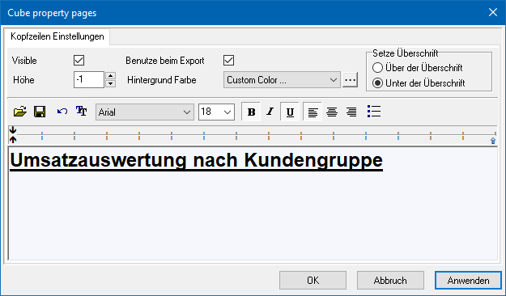
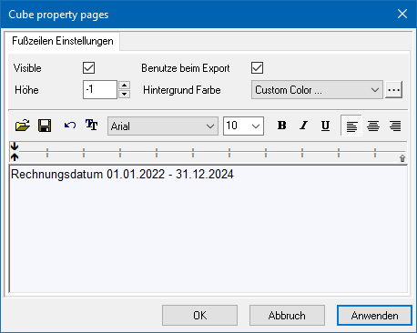

Folgende Funktionen stehen im Datenbereich über die rechte Maustaste zur Verfügung:
Ø Export
Um einen Cube zu exportieren, stehen verschiedene Formate zur Verfügung:
ü HTML
Es wird eine HTML Datei
erzeugt.
ü Excel (XML)
Es wird eine Excel
Datei im XML Format erzeugt.
ü CSV
Es wird eine CSV Datei
erzeugt.
ü PDF
Es wird eine PDF Datei
erzeugt.
ü Word
Es wird eine Word Datei
erzeugt.
ü Cube
Es wird eine Cube Datei
erzeugt, die im externen Olap Viewer geöffnet werden kann.
Ø Designs
Im Olap Viewer können alle Designs, welche unter Cube Designs angelegt wurden, ausgewählt werden. Der Cube wird dann im ausgewählten Design angezeigt.
Ø Drucken
Mittels Drucken kann der Cube ausgedruckt werden. Es öffnet sich eine Druckvorschau die dann mittels Mausklick auf das Druckersymbol in der Vorschau ausgedruckt werden kann.
Ø Kopfzeile
Wählt man Kopfzeile, so öffnet sich das "Cube property pages" Fenster.

In diesem Fenster kann die gewünscht Kopfzeile hinterlegt und entsprechend formatiert werden. Aktiviert man die Checkbox "Visible", wird die angelegte Kopfzeile auch im Olap Viewer angezeigt.
Ø Fußzeile
Wählt man Fußzeile, so öffnet sich das "Cube property pages" Fenster.

In diesem Fenster kann die gewünscht Fußzeile hinterlegt und entsprechend formatiert werden. Aktiviert man die Checkbox "Visible", wird die angelegte Fußzeile auch im Olap Viewer angezeigt.
Ø Kopieren
Der aktuelle Wert wird in die Windows Zwischenablage zum Einfügen in ein anderes Programm kopiert.